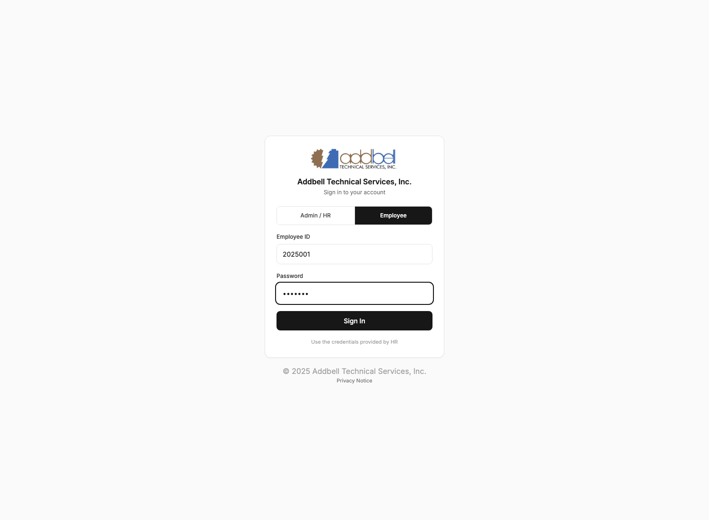
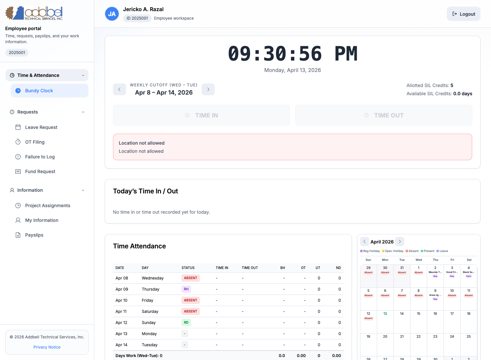
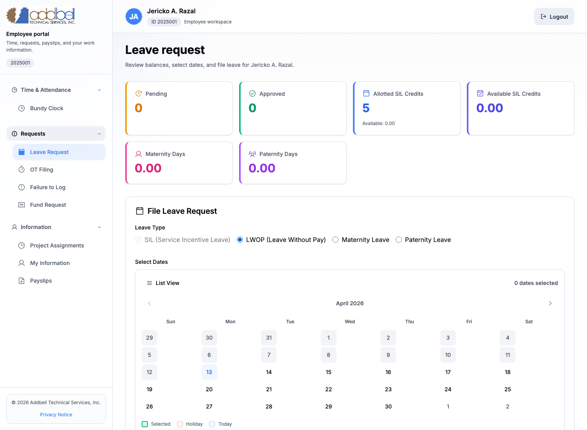
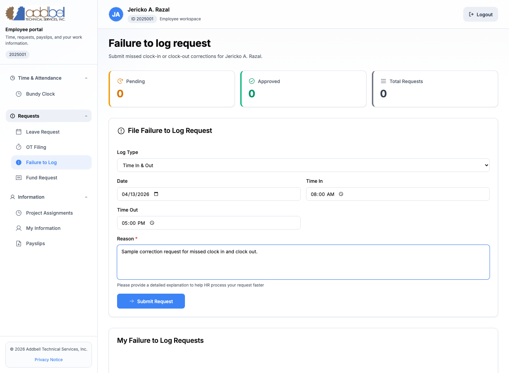
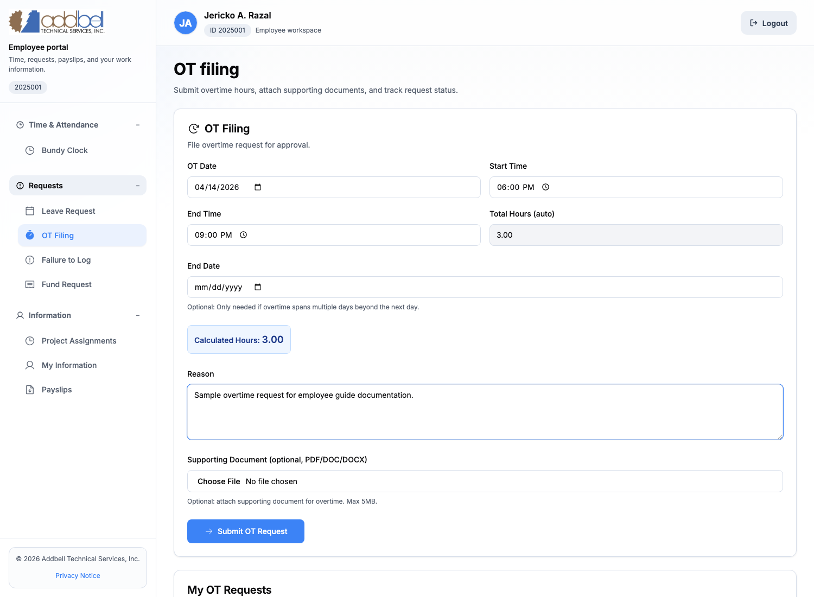
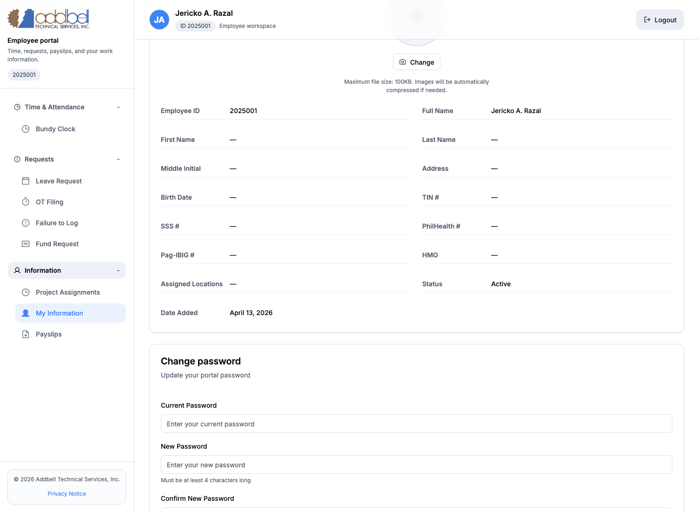
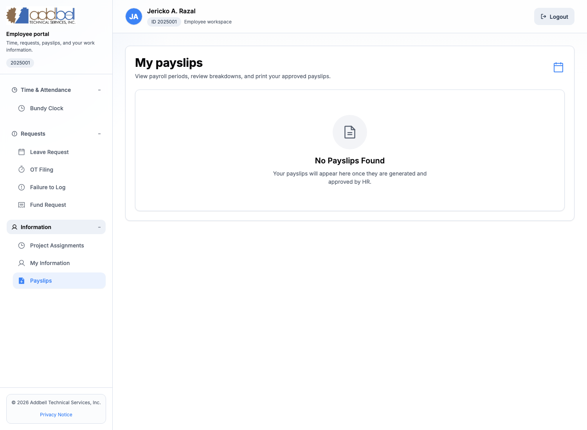
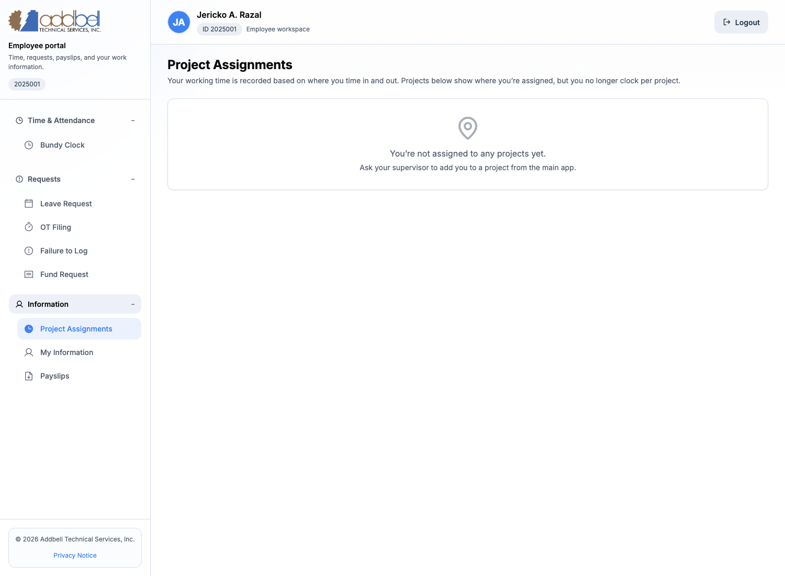

Employee Portal Guidebook
This guide is for employees using the Addbell employee portal for attendance and self-service tasks.
This guide covers:
- logging into the employee portal
- using the
Bundy Clockfor time in and time out - filing
Leave Request - filing
Failure to Log - filing
OT Filing - viewing
My Information - changing your portal password
- viewing
Payslips - checking
Project Assignments
This guide does not cover:
Fund RequestPurchase Order
Screens may vary slightly depending on your assigned access, available data, and HR setup, but the overall flow stays the same.
Before you start
Prepare these first:
- your
Employee ID - your current employee portal password
- location services enabled on your phone or computer if you will use
Bundy Clock - any supporting document needed for leave or overtime, if HR requires one
Important reminders:
- if you forgot your password, ask HR to reset it for you
- if you know your current password, you can change it yourself in
My Information Bundy Clockdepends on your GPS/location and approved work site assignment
1. Sign in to the employee portal
- Open the login page.
- Switch to
Employee. - Enter your
Employee ID. - Enter your password.
- Click
Sign In.

After login, you will enter the employee workspace and can open attendance, requests, payslips, and profile tools from the left sidebar.
2. Understand the employee portal menu
The employee portal sidebar is organized into these sections:
Time & AttendanceRequestsInformation
Main employee functions available today:
Bundy ClockLeave RequestOT FilingFailure to LogProject AssignmentsMy InformationPayslips
If a page is empty, that usually means:
- you do not have any records yet
- HR has not created data for that section yet
- your current work location or project assignment has not been set up yet
3. Use Bundy Clock for time in and time out
Open Bundy Clock from the sidebar to record attendance.
What you will see on this page:
- the current time and date
- the current weekly cutoff period
- your allotted and available SIL credits
Time InandTime Outbuttons- your location status
- your
Today’s Time In / Outsummary - your weekly
Time Attendancetable and calendar

How to time in or time out
- Open
Bundy Clock. - Check the location status message.
- If your location is accepted, click
Time Inat the start of work. - Click
Time Outwhen your shift ends.
If the page says location is not allowed
That means the portal sees that you are:
- outside the allowed work site radius, or
- not yet assigned to a valid clock location, or
- using a device with location services disabled
What to do:
- enable GPS or location access on your device
- move into the approved work site area
- ask HR if your clock location assignment needs to be updated
Bundy Clock tips
- do not time in and out repeatedly unless HR told you to do so
- review
Today’s Time In / Outright after punching - use
Failure to Logif a punch was missed or incorrect
4. File a leave request
Open Leave Request from the sidebar when you need to request leave.
This page shows:
- leave counters and credits
- the leave filing form
- date selection calendar
- your leave history and statuses

Leave types available
SILLWOP
How to file leave
- Open
Leave Request. - Choose the leave type.
- Select one or more dates on the calendar.
- Enter your reason.
- Attach a supporting document if needed.
- Click
Submit Leave Request.
Leave request rules to know
- weekends and holidays are not counted the same way as regular workdays
LWOPcan show half-day options after you select dates- supporting files must be
PDF,DOC, orDOCX - the file size limit is
5MB
Leave request statuses
pending: waiting for approvalapproved_by_manager: manager approved, waiting for HRapproved_by_hr: fully approvedrejected: deniedcancelled: cancelled by the employee before final processing
When to use leave vs failure to log
Use Leave Request when:
- you will be absent for approved leave
- you are formally requesting SIL or LWOP
Do not use Leave Request for a missed time in or time out. Use Failure to Log for that instead.
5. File a failure to log request
Open Failure to Log when you forgot to record a punch or your time entry needs correction.
This page shows:
- request counters
- the correction request form
- your request history

When to use Failure to Log
Use this page if:
- you forgot to
Time In - you forgot to
Time Out - both time in and time out were missed
How to file a failure to log request
- Open
Failure to Log. - Choose the
Log Type:
Time InTime OutTime In & Out
- Enter the correct date.
- Enter the missing time or times.
- Enter a clear reason.
- Click
Submit Request.
Best practice for the reason field
Write a short but specific explanation, such as:
- forgot to punch after arriving on site
- phone battery died before clocking out
- location service failed during clock out
Failure to Log statuses
pending: under reviewapproved: correction acceptedrejected: correction deniedcancelled: request cancelled by the employee
6. File overtime
Open OT Filing when you need approval for overtime work.
This page shows:
- the overtime filing form
- auto-calculated total hours
- your overtime request history

How to file overtime
- Open
OT Filing. - Enter the
OT Date. - Enter the
Start Time. - Enter the
End Time. - If the overtime spans beyond the next day or across more than one date, fill
End Date. - Review the
Total Hours (auto)field. - Enter the reason for overtime.
- Attach a supporting document if needed.
- Click
Submit OT Request.
Overtime rules to know
- total hours are calculated automatically from your start and end time
- overnight OT can roll into the next day
- supporting files must be
PDF,DOC, orDOCX - the file size limit is
5MB
Overtime request statuses
pending: waiting for approvalapproved: acceptedrejected: denied
7. Review your employee information
Open My Information to review the profile details HR has on file for you.
This page can include:
- employee ID
- full name
- address
- birth date
- government numbers
- status
- assigned locations
- profile picture upload
- password change form

What employees can do here
- review HR profile details
- upload or replace a profile picture
- change their own portal password
How to change your password
- Open
My Information. - Open the
Change passwordsection. - Enter your current password.
- Enter your new password.
- Confirm the new password.
- Click
Update Password.
Password rules on this page:
- the new password must be at least
4 characters - the new password must match the confirmation field
- the new password must be different from the current password
If you forgot your current password, contact HR. Employees cannot self-change the password without knowing the current one.
8. View payslips
Open Payslips from the sidebar to view available payroll records.
This page is where employees will:
- review released payslips
- open a payslip
- review breakdowns
- download or print payslips when available

If you see No Payslips Found, it usually means:
- HR has not yet generated your payslip
- your payslip is not yet approved or released
- there is no payroll record yet for the selected period
If a payslip is available, use the view or download actions shown on the page.
9. Check project assignments
Open Project Assignments to see where you are currently assigned.
This page is informational. It helps you confirm project placement, but employees do not clock in and out per project anymore.

Important note:
- attendance is based on your approved work location and
Bundy Clock - project assignment visibility does not replace time in and time out
If no project appears, ask your supervisor or HR to verify your assignment in the main system.
10. Common status meanings
| Area | Status | Meaning | |---|---|---| | Leave | pending | Waiting for review | | Leave | approved_by_manager | Manager approved, still waiting for HR | | Leave | approved_by_hr | Fully approved | | Leave / OT / Failure to Log | rejected | Request was denied | | Leave / Failure to Log | cancelled | Request was cancelled | | OT | approved | Overtime request accepted | | Payslip | draft | Not yet finalized for release | | Payslip | approved | Prepared and approved | | Payslip | paid | Completed payroll record |
11. Troubleshooting
I cannot log in
- confirm you are using
Employeemode, notAdmin / HR - recheck your
Employee ID - recheck your password
- if you forgot the password, ask HR to reset it
I cannot time in or time out
- enable location services
- move inside the approved work site radius
- refresh the page
- ask HR to verify your assigned clock location
My leave or overtime request is not moving
- check the status on the page
- if it is still
pending, follow up with your supervisor or HR - if it is
rejected, review the reason and refile if needed
My information is incomplete
- some fields depend on HR records
- ask HR to update your employee profile in the main system
My payslip is missing
- wait for HR to generate and release payroll
- ask HR if the payroll period has already been processed
12. Best practices for employees
- always use
Bundy Clockwhen arriving and leaving - file
Failure to Logas soon as you notice a missed punch - use
Leave Requestonly for actual leave filing - use
OT Filingonly for overtime that needs approval - keep your password private
- review your
My Informationpage regularly so HR can correct missing details early